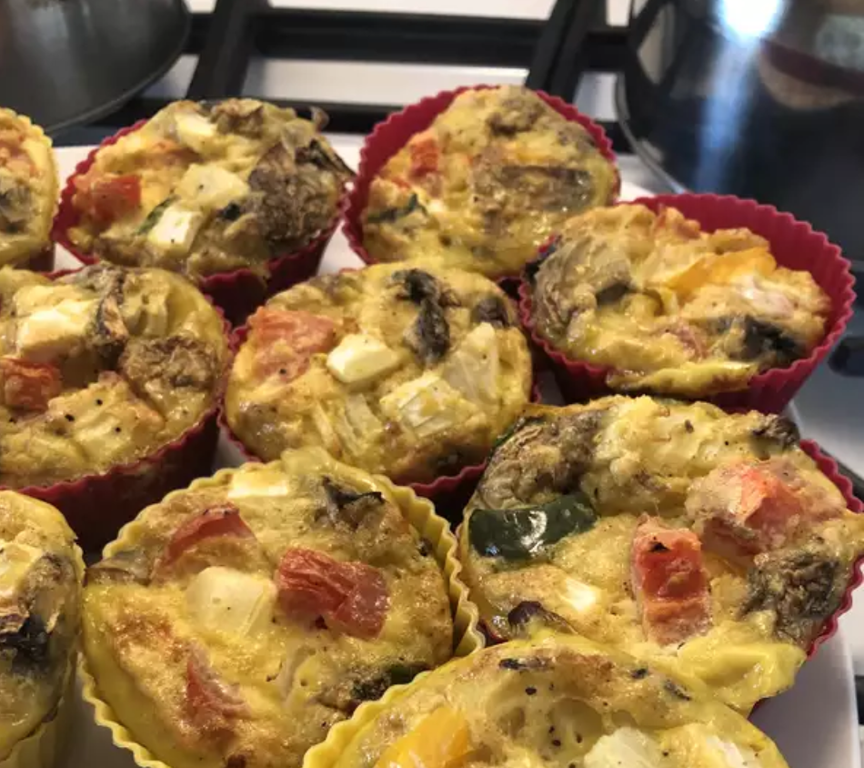

Scrambled Egg Muffins

Description
These egg muffins are made with lots of sausage and Cheddar cheese and will
make a filling and fun treat at your next brunch. They're pretty, hearty, and fun to serve.
Ingredients
- 1/2 pound bulk pork sausage
- 12 eggs
- 1/2 cup chopped onion
- 1/2 chopped green bell pepper
- 1/2 teaspoon salt
- 1/4 teaspoon ground black pepper
- 1/4 teaspoon garlic powder
- 1/2 cup shredded Cheddar cheese
Steps
- Preheat oven to 350 degrees F (175 degrees C). Lightly grease 12 muffin
cups or line with paper muffin liners.
- Heat a large skillet over medium-high heat. Stir in sausage and cook
until crumbly, evenly browned, and no longer pink, 10 to 15 minutes. Drain off grease.
- Beat eggs in a large bowl. Stir in onion, green pepper, salt, pepper, and
garlic powder. Mix in sausage and Cheddar cheese. Spoon into the prepared muffin cups
- Bake in the preheated oven until a knife inserted near the center comes out
clean, 20 to 25 minutes.
Click here to go back to recipes.